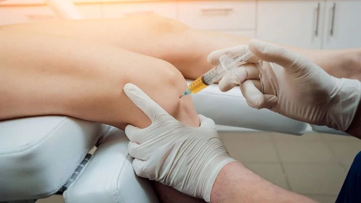
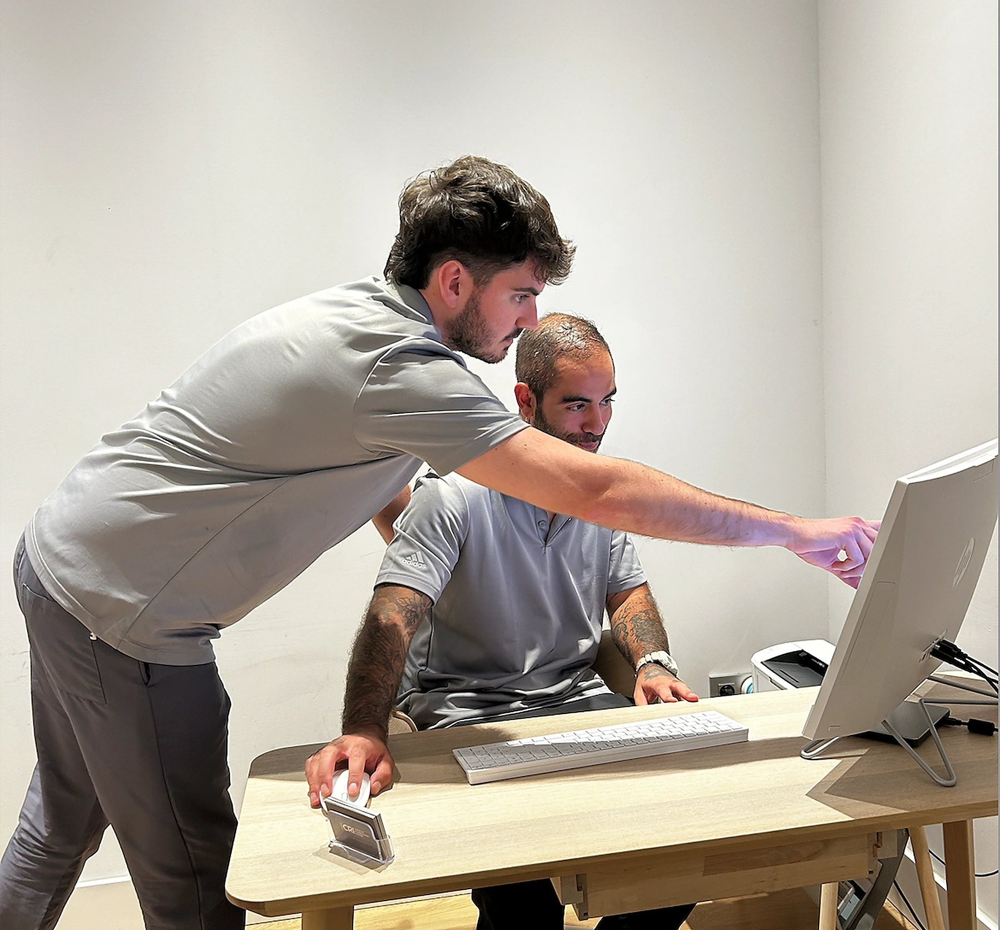
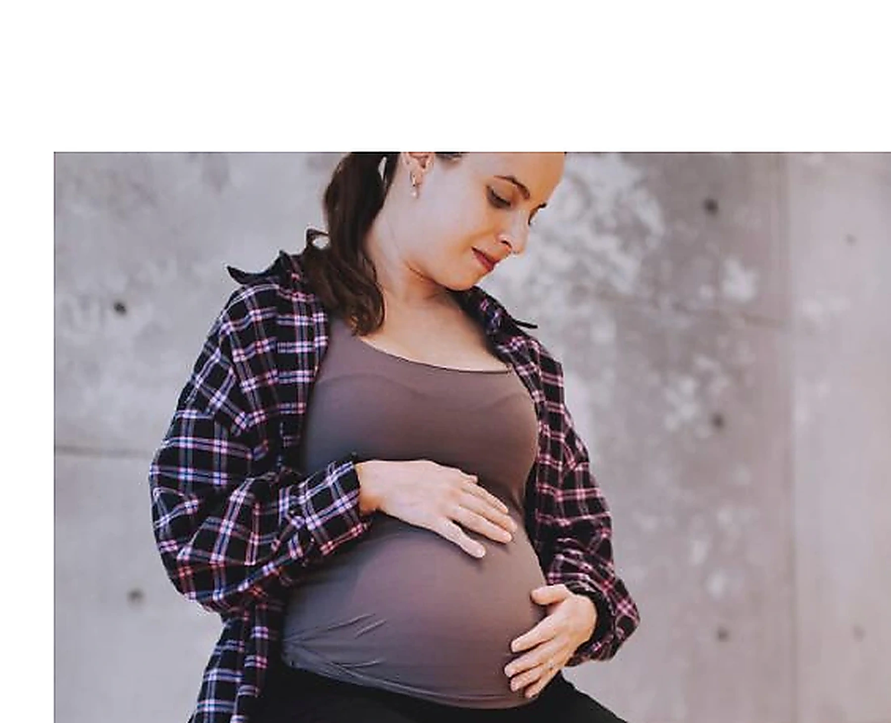
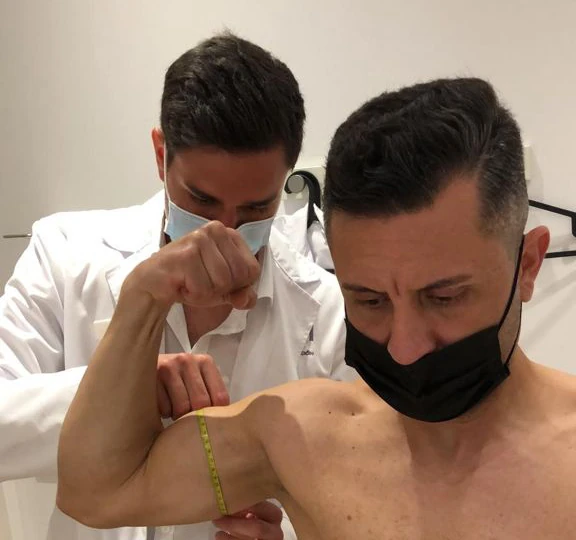
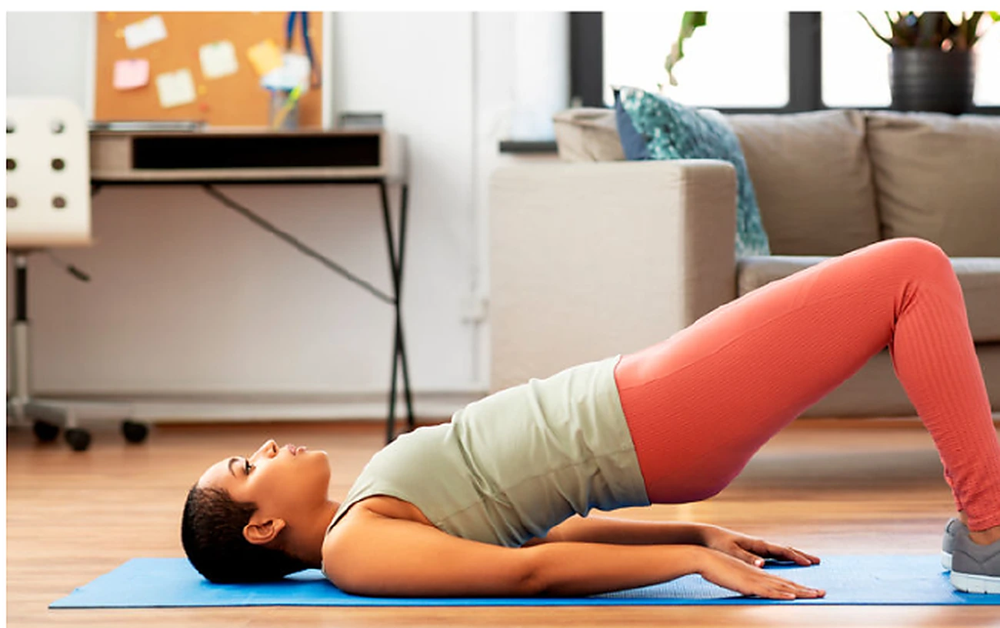
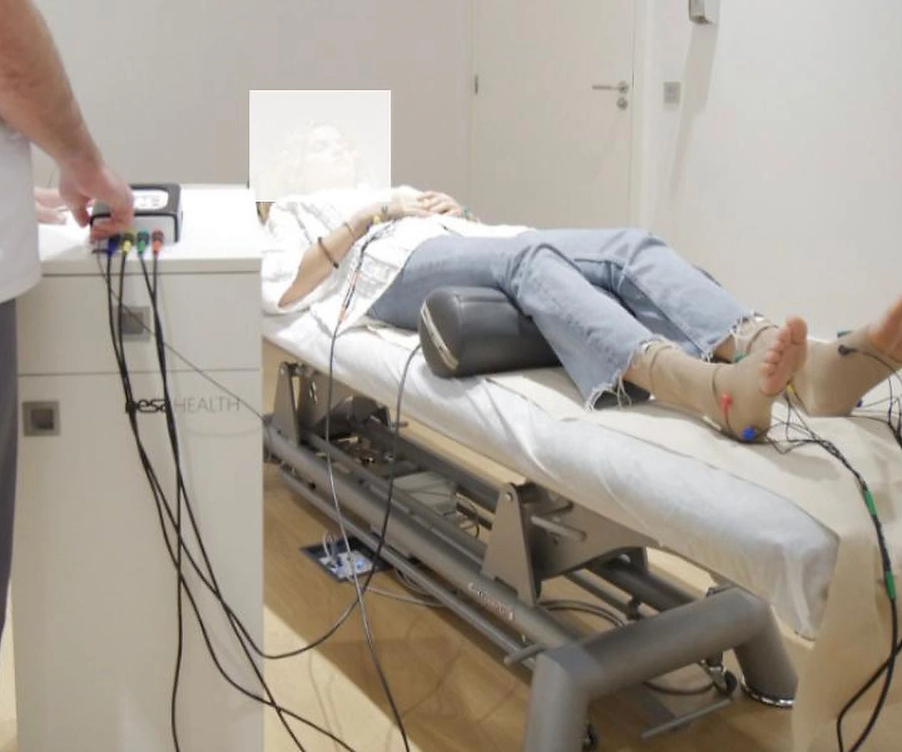
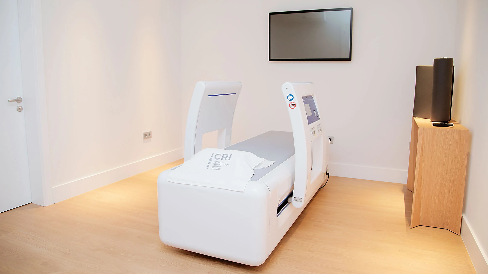
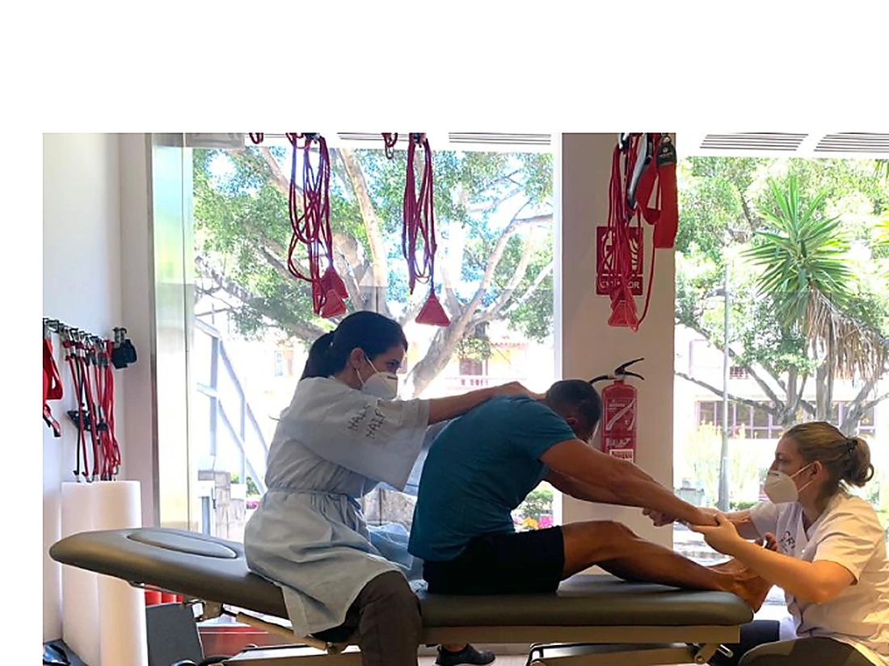

Hernia discal: síntomas, diagnóstico y tratamiento integral en CRI Rambla
Qué ocurre en una hernia discal, qué síntomas requieren valoración y cómo se coordina el tratamiento conservador o quirúrgico.
Leer artículo →Artículos sobre dolor, movimiento, tecnología, prevención y novedades del equipo CRI.
Qué ocurre en una hernia discal, qué síntomas requieren valoración y cómo se coordina el tratamiento conservador o quirúrgico.
Leer artículo →
La incorporación de la especialista en Neurocirugía refuerza el abordaje coordinado de las patologías complejas de columna.
Leer artículo →
Una unidad orientada a procedimientos precisos, guiados por ecografía y coordinados con la rehabilitación.
Leer artículo →Cómo la neuromodulación no invasiva puede integrarse en un abordaje global de los síntomas asociados a la menopausia.
Leer artículo →
Terapia manual, ejercicio, ecografía y tecnología dentro de un proceso personalizado y coordinado.
Leer artículo →
Un programa de preparación al parto que trabaja movilidad pélvica, respiración, suelo pélvico y acompañamiento de la pareja.
Leer artículo →
Lesiones frecuentes en el pádel y cómo se organiza una recuperación progresiva orientada a volver a jugar.
Leer artículo →
La fisioterapia puede ayudar a tratar síntomas genitourinarios y mejorar la calidad de vida tras determinados tratamientos.
Leer artículo →
Qué es la neuromodulación no invasiva y por qué se utiliza como complemento de otros tratamientos.
Leer artículo →
La resonancia terapéutica MBST® se emplea en indicaciones seleccionadas dentro de un plan de tratamiento individualizado.
Leer artículo →
Un proceso de rehabilitación orientado a recuperar control, equilibrio, movilidad y autonomía tras un accidente cerebrovascular.
Leer artículo →Movilidad, respiración y ejercicio progresivo para recuperar capacidad después de una enfermedad que puede dejar secuelas.
Leer artículo →
La reducción del movimiento puede favorecer pérdida de fuerza, rigidez y menor tolerancia al esfuerzo.
Leer artículo →
La fisioterapia geriátrica ayuda a preservar movilidad, seguridad, participación y calidad de vida.
Leer artículo →
Hábitos sencillos para reducir el impacto de la inactividad, mejorar el descanso y evitar conductas que aumentan el dolor.
Leer artículo →
Medidas organizativas e higiénicas implantadas durante la pandemia para reducir riesgos en el centro.
Leer artículo →El equipo de CRI puede ayudarte a identificar el servicio más adecuado para tu situación.